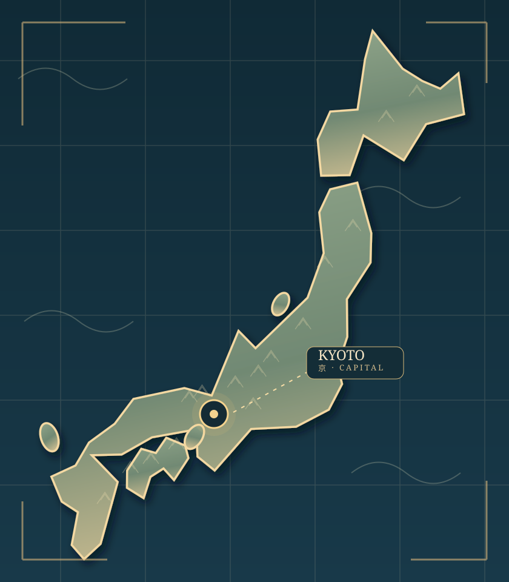

01 · Overworld
The Islands of Japan

Tap Kyoto to explore the first region.
Explore asset kit · 12 included EAST sprites
The miniature skin uses a compact in-game texture atlas made from twelve selected EAST assets. Artwork and shadows are not redistributed as a standalone asset pack. Both skins reuse one location JSON.
Reusable taxonomy